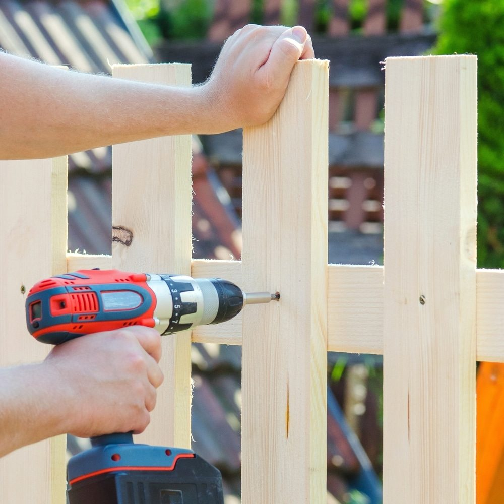

In This Guide
- Fence cost is quoted per linear foot, and the rate depends on material, height, style, site conditions, and how much labor the job takes.
- Chain link is usually the least expensive option, wood sits in the middle, and vinyl and ornamental metal tend to cost more up front.
- Turn any per-foot rate into a total by multiplying by your length, then add gates, removal of an old fence, and other extras.
- Written quotes with line items are the best way to see what a per-foot price includes and leaves out.
Ask five people what a fence costs per foot and you may hear five different answers. All of them can be right, because a fence price depends on what is being built, where it goes, and who builds it. The per-foot number is a useful shortcut, as long as you know what sits behind it.
This guide from Big Easy Fence explains what drives the per-foot cost of a fence in New Orleans, how the main materials compare, and how to turn a rate into a real budget for a residential fence.
What a Linear Foot Means
A linear foot is one foot of fence measured along a straight line. Contractors quote fencing this way because it scales with the length of the job. A yard that needs 200 feet of fence costs more than one that needs 100, and the per-foot rate lets you compare both on equal terms.
Keep in mind that a per-foot rate is an average. Gates, corners, slopes, and obstacles are often priced on top of it, so ask what the number includes.
What Drives the Cost per Foot
Type of Fence
The material sets the baseline. Wood fences are popular for their natural look and reasonable price, though they need staining or painting. Vinyl offers low upkeep but tends to cost more up front. Chain link is budget-friendly and durable but has little privacy. Aluminum and wrought iron sit at the higher end and offer a premium look and added security.
Size of the Project
The more fence you build, the more you pay in total, because you need more materials and more labor hours. A taller fence also uses more material per foot than a short one, so height changes the rate as well as the total.
Location and Access
Terrain, soil, buildings, trees, utilities, and permits can all raise the cost of installing a fence. A flat, open lot is the easiest to price. A crowded or sloping one takes more time and effort, and the rate goes up to match.
How the Main Materials Compare
| Material | Cost per Foot | What Pushes It Up |
|---|---|---|
| Chain Link | Among the lowest | Taller height, heavier wire gauge, coatings, privacy slats |
| Wood | Low to moderate | Better species, taller height, privacy styles, decorative tops |
| Vinyl | Moderate to high | Premium panels, UV-protective finishes, complex layouts |
| Aluminum and Wrought Iron | High | Ornate designs, custom work, added height |
The table shows the order of price, not exact figures. Prices move with the market, so a quote from a local contractor is the only number you can rely on. As a rough reference, older ballpark figures put an installed chain link fence at about $10 to $20 per linear foot, and a current quote may land above or below that.
Turning a Rate Into a Total
The math is simple. Multiply your total linear feet by the per-foot rate, then add gates, removal of an old fence, and any site work. Here is what that looks like with the rough chain link range above.
- Example length. 300 linear feet of fence.
- Low end. 300 times $10 is about $3,000.
- High end. 300 times $20 is about $6,000.
- Add extras. Gates, hardware, and removal go on top.
Wood, vinyl, and metal rates are higher or lower than chain link, so the same 300 feet lands in a different range. For the measuring side, our guide on how to estimate a fence shows how to count linear feet and posts.
A per-foot price that looks great can skip the gate, the concrete for the posts, the removal of the old fence, or the finish. Ask what is included before you compare two numbers.
Ways to Keep the Cost Down
Compare Written Quotes
Ask two or three contractors to quote the same fence with the same height and materials. Compare them line by line. Ask each about the warranty terms and how long the fence should last in this climate, and get the answers in writing.
Simplify the Design
A plain style with fewer gates and fewer custom touches costs less to build. You can add features later if the budget allows.
Think About Doing Part Yourself

Handy homeowners can save on labor for simple fences, but DIY does not fit every fence or every yard. Digging requires having underground utilities located first, so call 811 before you start. If you are unsure, talk to a professional before you buy materials.
Bringing It Together
There is no single average cost per foot that fits every New Orleans yard. Material, height, site conditions, and labor all move the number. Use the per-foot rate to compare options, then rely on a written quote for the real price.
If you would like a number for your own property, our team can measure the yard and give you a free estimate. Browse the fence types we install to decide which material to price first.
Common Questions
How Much Is 300 Feet of Fence?
How Do I Estimate the Cost of a Wood Fence?
What Is the Cheapest Fence to Have Installed?
How Do You Write a Fence Estimate?
What Is a Linear Foot of Fence?
Want Real Per-Foot Numbers for Your Yard?
Send us your measurements and preferred material, and we will give you a line-by-line quote.